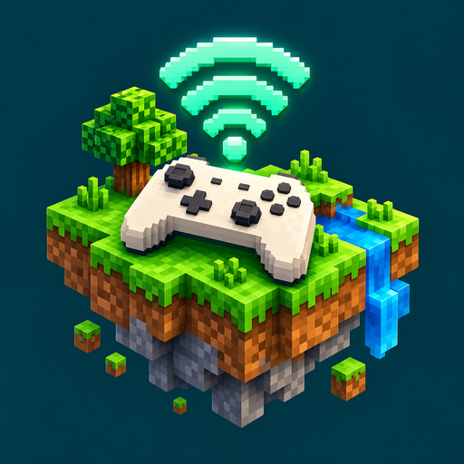

ChunkHop
Your Bedrock server. Your console. One hop.
Connect through your Android phone
Make a temporary LAN-world entry appear in Minecraft Bedrock, then transfer your console to the server you choose.
- Connect your phone and console to the same local network.
- Enter the destination hostname and UDP port, then start sharing.
- Open Minecraft’s LAN worlds on your console and select ChunkHop.
You need an existing reachable Bedrock server. ChunkHop does not host your world or relay gameplay.
Local, simple and transparent
No ChunkHop account, advertising or analytics backend. The app includes connection counters and searchable setup help.
Requires Android 8 or later, a 64-bit ARM phone, Wi-Fi IPv4 and compatible Minecraft Bedrock versions. Console compatibility varies.